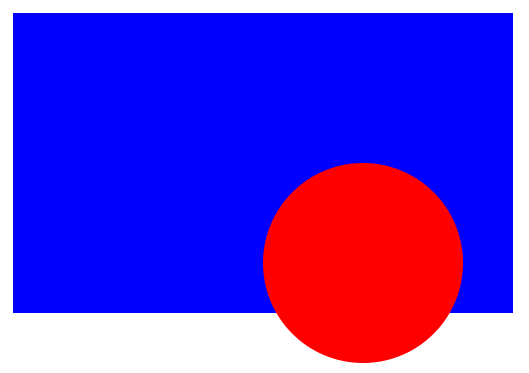

CSS
-
CSS Basic Box Model
- When laying out an HTML document, the browser's rendering engine represents each element as a rectangular box according to the stand CSS basic box model. CSS determines the size, position, and the properties (color, background, border size, etc.) of these boxes.
-
Every box is composed of four parts (or areas), defined by their
respective edges:
- Content edge
- Padding edge
- Border edge
- Margin edge
-
Content Area
- The content area, bounded by the content edge, contains the "real" content of the element, such as text, and image, or a video player. Its dimensions are the content width (or the content-box width) and the content height (or the content-box height). It often has a background color or background image.
- Everything in CSS has a box around it, and understanding these boxes is key to being able to create more complex layouts with CSS, or to align items with other items.
-
Outer Display Type
-
If a box has an outer display type of
block, then:- The box will break onto a new line.
-
The
widthandheightproperties are respected. - Padding, margin, and border will cause other elements to be pushed away from the box.
-
If
widthis not specified, the box will extend in the inline direction to fill the space available in its container. In most cases, the box will become as wide as its container, filling up 100% of the space available. -
Some HTML elements use
blockas their outer display type by default:h1p
-
If a box has an outer display of
inline, then:- The box will NOT break onto a new line.
-
The
widthandheightproperties will NOT apply. - Top and bottom padding, margins, and borders will apply but will NOT cause other inline boxes to move away from the box.
- Left and right padding, margins, and borders will apply but will cause other inline boxes to move away from the box.
-
Some HTML elements use
inlineas their display type by default:aspanemstrong
-
If a box has an outer display type of
-
Inner Display Type
- Boxes also have an inner display type, which dictates how elements inside that box are laid out.
- Block and inline layout is the default way things behave on the web. By default and without any other instruction, the elements inside a box are laid out in normal flow and behave as a block or inline boxes.
-
You can change the inner display type, for example, by setting
the
display: flex;. The element will still use the outer display typeblock, but this changes the inner display type toflex. Any direct children of this box will becom flex items and behave according to the flexbox specification. - Other inner values that boxes can have:
- Block and Inline Layout
- The CSS box model defines the rectangular boxes, including their padding and margin, that are generated for elements and laid out according to the visual formatting model.
- A box in CSS consists of a content area, which is where any text, images, or other HTML elements are displayed. This is optionally surrounded by padding, a border, a margin, and one or more sides. The box model describes how these elements work together to create a box and are displayed by CSS.

-
Center text in a container box:
div { display: flex; justify-content: center; align-items: center; } -
Move text in
<pre>element of class "html" with child<code>element to the left 100 pixels using external CSS stylesheet.pre.html > code { position: relative; left: -100px; } -
The
marginCSS shorthand property sets the margin area on all four sides of an HTML element.-
margin: <value 1> <value 2> <value 3> <value 4>- If only value 1 is supplied, margin spacing applies to all four sides of the element (top, right, bottom, left).
- If values 1 and 2 are supplied, value 1 applies to the top and bottom margins, and value 2 applies to the right and left margins.
- If values 1, 2, and 3 are supplied, value 1 applies to the top margin, value 2 applies to both the right and left margins, and value 3 applies to the bottom margin.
- If all 4 values are supplied, value 1 applies to the top margin, value 2 applies to the right margin, value 3 applies to the bottom margin, and value 4 applies to the left margin.
-
-
Adjust space between
<ul> <li>bullet and the list/bullet itme (text etc.):ul.fourth-level-bullet > li > span { position: relative; left: 12px; } -
!importantA
!delimiter followed by theimportantkeyword marks the declaration as important. The!importantflag alters the rules selecting the declarations inside the cascade.The
!importantcomes after the value of the property value pair declartion and is preceded by at least one space. The important flag must be the last token in the declaration. In other words, there can be white space and comments between the flag and the declaration's ending semicolon, but nothing else.Example:selector { property: value; /* normal declaration */ property: value !important; /* important declaration (preferred) */ property: value ! important; /* important declaration (not preferred) */ } -
Create a box and a circle
<!DOCTYPE html> <html lang="en"> <head> <meta charset="UTF-8"> <meta name="viewport" content="width=device-width, initial-scale=1.0"> <title>Create Box and Circle</title> </head> <body> <div class="blue-box"> <div class="red-circle> </div> </div> </body>div.blue-box { position: absolute; background-color: blue; height: 300px; width: 500px; top: 200px; left: 200px; } div.red-circle { position: relative; background-color: red; height: 200px; width: 200px; border-radius: 50%; /* this turns box into circle */ top: 150px; left: 150px; } -
CSS Positioning
(Source:
w3schools.com
10082023)
-
Static
Static positioning is the default that every HTML element gets. Static positioned elements are not affected by the top, bottom, left, and right properties. An element with
postion: static;is not positioned in any special way; it is always positioned according to the normal flow of the page. -
Relative
An element with
postion: relative;is positioned relative to its normal position. Setting the top, right, bottom and left properties of a relatively-positioned element will cause it to be adjusted away from its normal position. Other content will not be adjusted to fit into any gap left by the element. -
Fixed
An element with
position: fixed;is positioned relative to the viewport (web browser), which means it always stays in the same place even if the page is scrolled. The top, right, bottom, and left properties are used to position the element. A fixed element does not leave a gap in the page where it would normally have been located. -
Absolute
An element with
position: absolute;is positioned relative to the nearest "positioned ancestor" (i.e., an ancestor with theposition: <value>;attribute set) instead of positioned relative to the viewport, like fixed. However; if an absolute positioned element has no positioned ancestors, its position is relative to the document body, and moves along with page scrolling.
-
Static